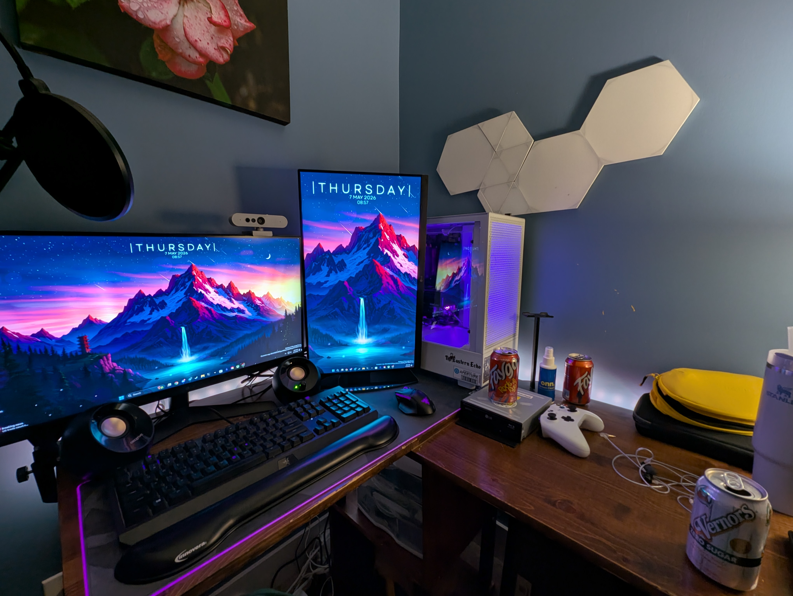
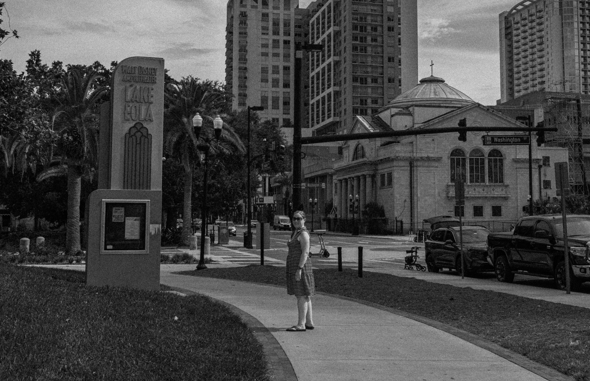
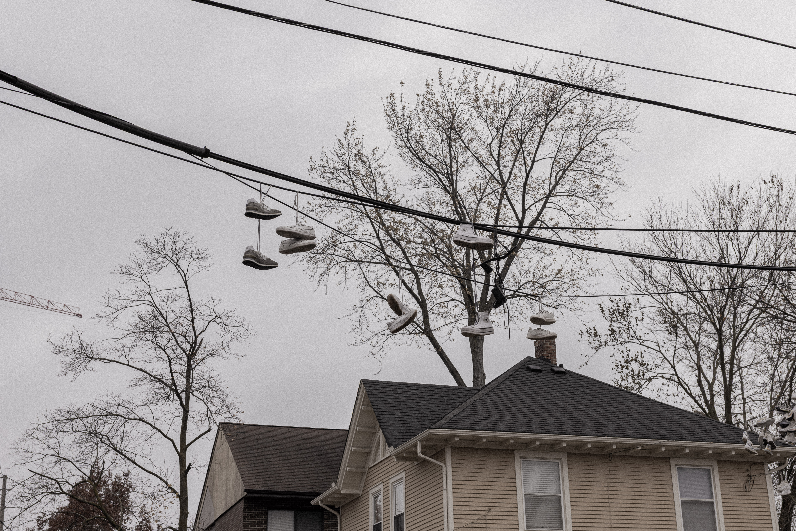
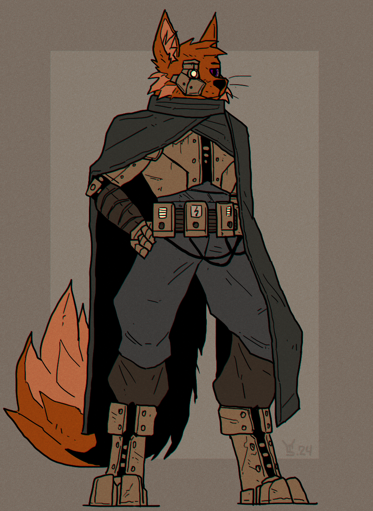

heyaaaa, it's kaleb or known sometimes as keoni.
i'm 20 years old, pansexual/non-binary, use any pronouns and reside in southeastern michigan.
i'm studying urban and regional planning with a focus on public transportation planning.
i have a wide mix of hobbies and interests from photography, computers/homelabbing, to video games.
i also am a member of the furry fandom and attend events when i can.




07/08/2026 - literally setup the site
[ twitter ]
[ bluesky ]
[ telegram ]
[ photography website ]